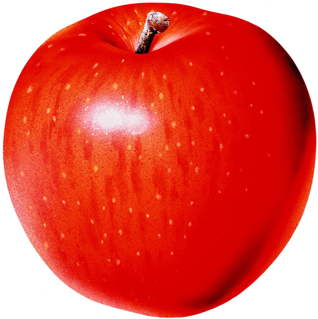

<!DOCTYPE html>
<!--
Title:
Тень балуна

Description:
Проверяем установку собственного макета тени балуна со смещением.
Памятка по терминам: https://wiki.yandex-team.ru/eva/testing/Projects/maps-api/

Components:
balloon

Estimated time:
60000

Precondition:
Открыть ссылку ${currentPagePath}

Step:
  Action:
  Осмотреть карту и элементы на ней.

  Expectation:
  Карта отобразилась.
  На карте спан Российских городов.
  В центре спана открыт балун с текстом: "balloon with apple shadow", под балуном картинка яблока, под которой текст SHADOW.
 
Step:
  Action:
  Закрыть балун кликом в кнопку закрытия - крестик.

  Expectation:
  Балун метки закрылся, картинка яблока и текст пропали со спана карты.

Step:
  Action:
  Зажав ЛКМ переместить спан карты.

  Expectation:
  Захват и перемщеение карты корректное: карта не мигает, не пропадает.
 
Step:
  Action:
  Выполнить клик в любое место на спане карты.

  Expectation:
  При клике в спан карты в центре спана открывается балун с текстом: "balloon with apple shadow", под балуном картинка яблока, под которой текст SHADOW.
-->
<html lang="en">
<head>
    <title>2.1</title>
    <meta http-equiv="Content-Type" content="text/html; charset=utf-8"/>
    <script src="../../helper.js"></script>
    <script type=text/javascript>

        Api('init');

        function init(ymaps) {

            var myMap = new ymaps.Map("map", {
                        center: [54.83, 37.11],
                        zoom: 5
                    }, {
                        searchControlProvider: 'yandex#search'
                    });

            var myLay = ymaps.templateLayoutFactory.createClass(
                    '<div style="margin: 10px; background: #000;">' +
                    '<p></p>' +
                            '<p>SHADOW</p>'+
                    '</div>'
            );

            var newLay = ymaps.templateLayoutFactory.createClass(
                    '<p>balloon with apple shadow</p>'
            );

            var balloon = new ymaps.Balloon(myMap);
            balloon.options.setParent(myMap.options);
          //  balloon.options.set('closeButton',false);
            balloon.options.set ('contentLayout',newLay);
            balloon.options.set('shadow', true);
            balloon.options.set('shadowLayout',myLay);
            balloon.options.set('shadowOffset', [90,-50]);
            balloon.open(myMap.getCenter());

            myMap.events.add('click', function(){ balloon.open(myMap.getCenter());})


            addGrid(myMap);
            var log = new Log();
            log.info('Test script: тень балуна');
        }
    </script>
</head>
<body>
<div id="map" style="height: 512px; width: 512px;"></div>
</body>
</html>


